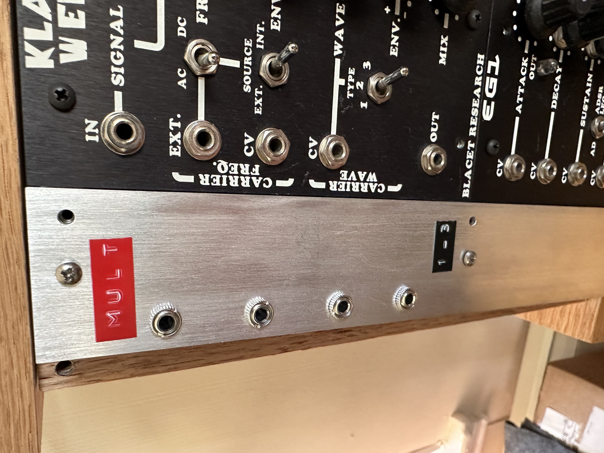
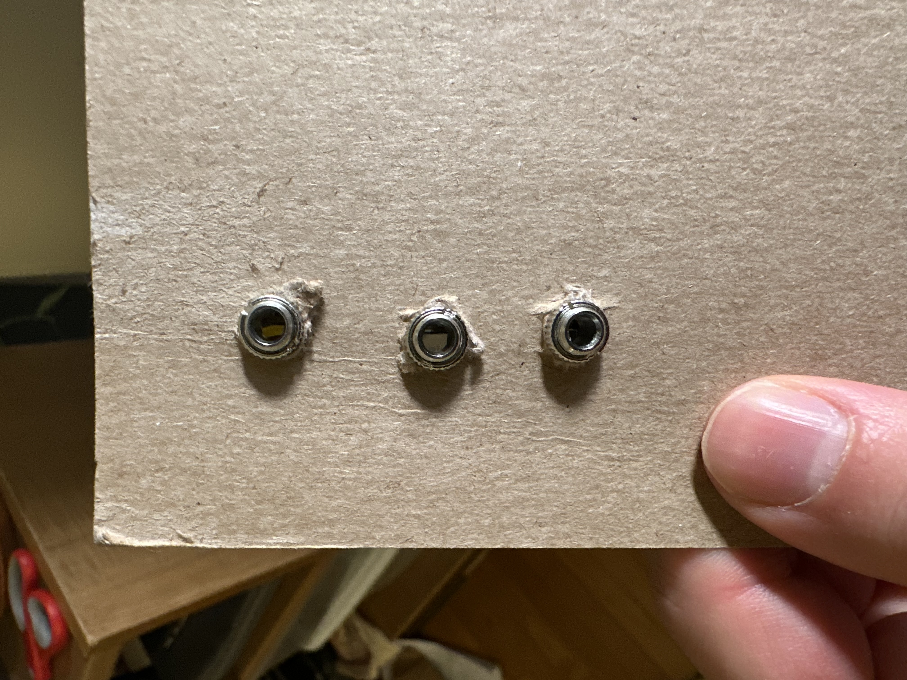
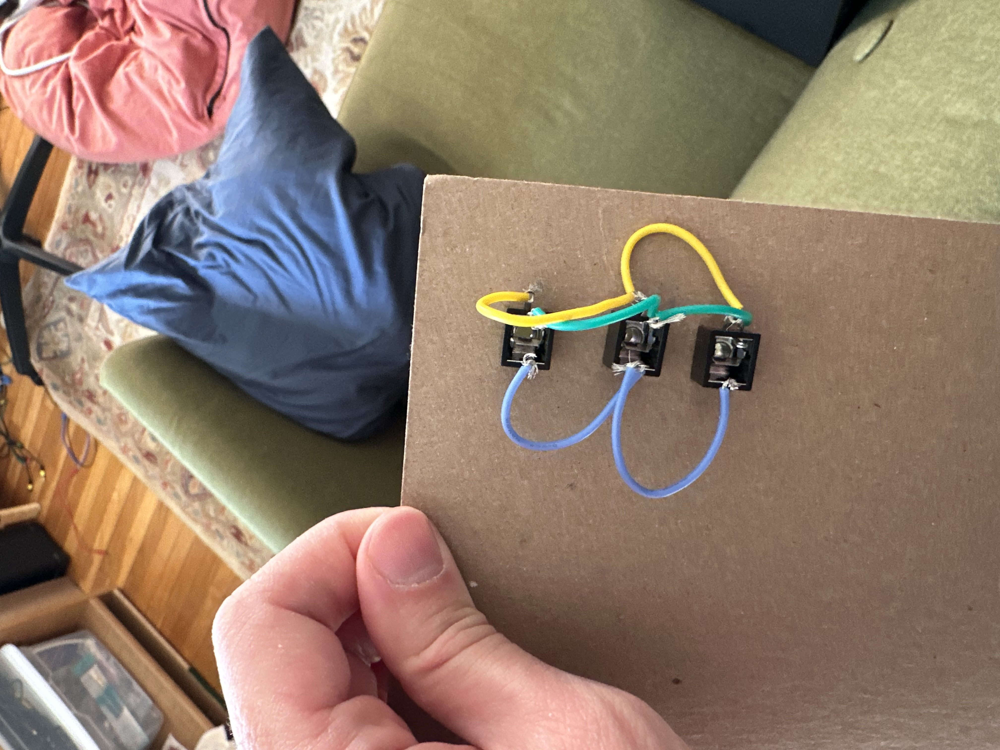
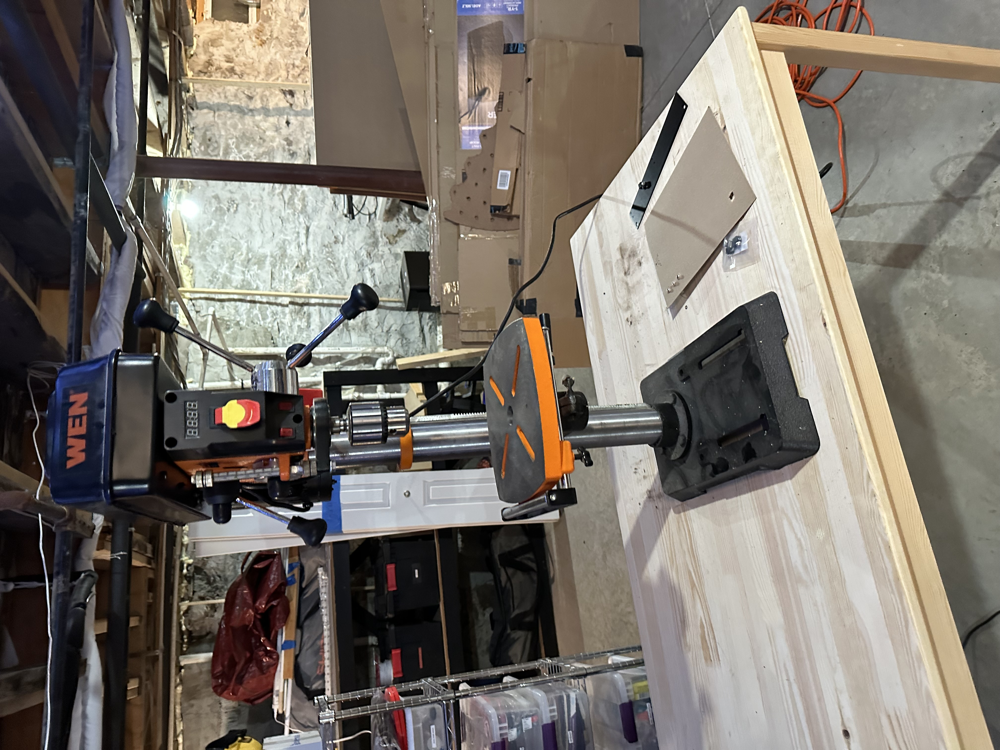
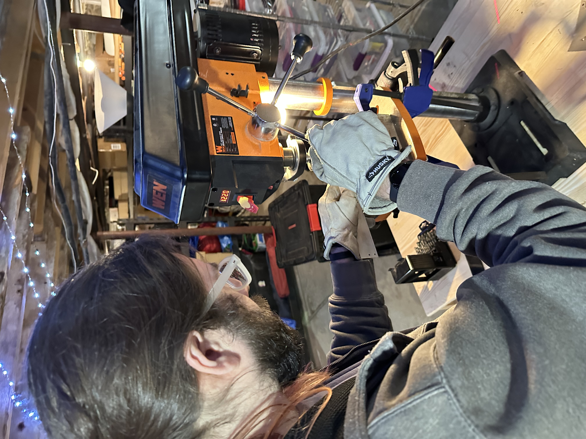
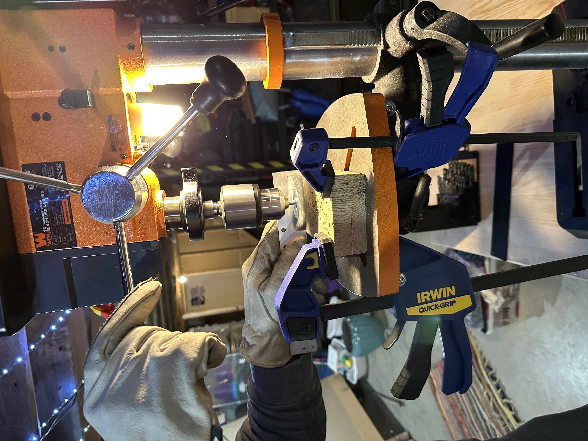
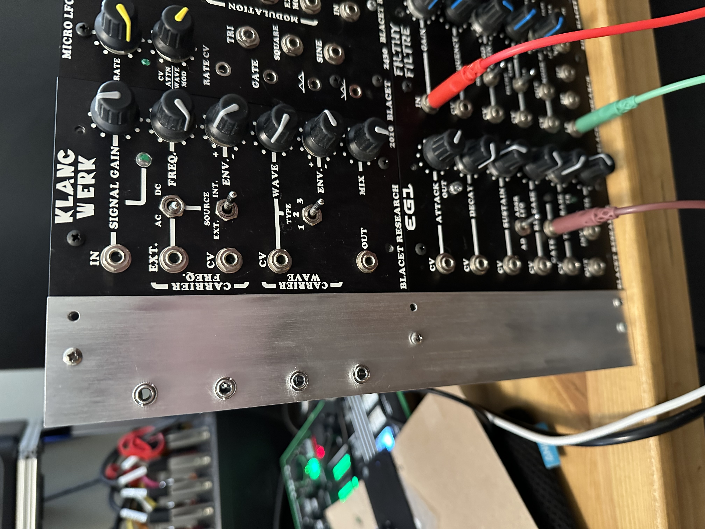

back
back
Building a mult module for a modular synthesizer
Introduction
In a modular synthesizer, a multiplier lets you "multiply" signals. For example, you could take an LFO signal, and multiply it, so it controls both the pitch of a VCO, and the cutoff of a filter. You could multiply a clock signal, to synchronize the tempo of multiple sequencers.
| | |-| |  |
Design
Wire the tip terminals together, and the ground terminals together.
The build
First, I prototyped the module on a piece of cardboard (please ignore my messy living room):
| | | |-|-| |  | |
Then, we drilled holes.
Then, we brushed the steel. It gave it a nice, sleek look:
| | | |-|-| | |  | | |  |